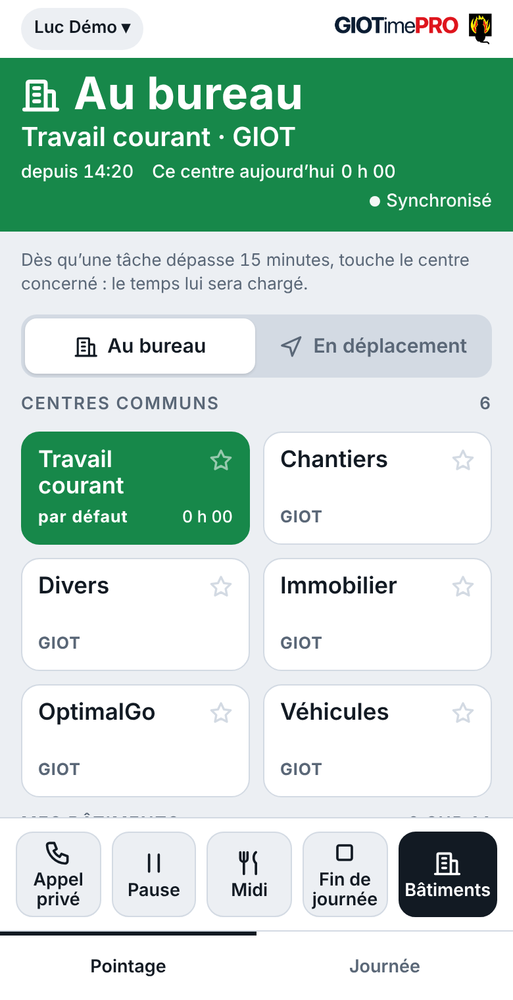
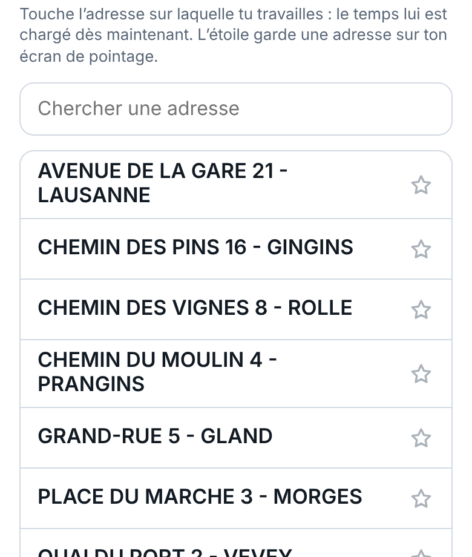
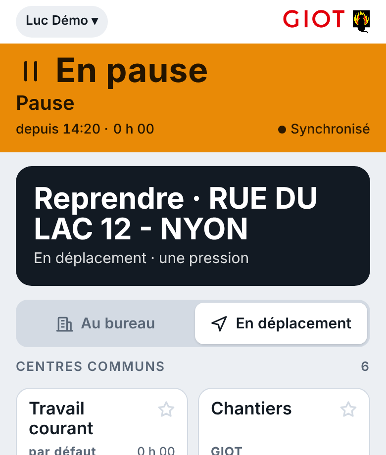
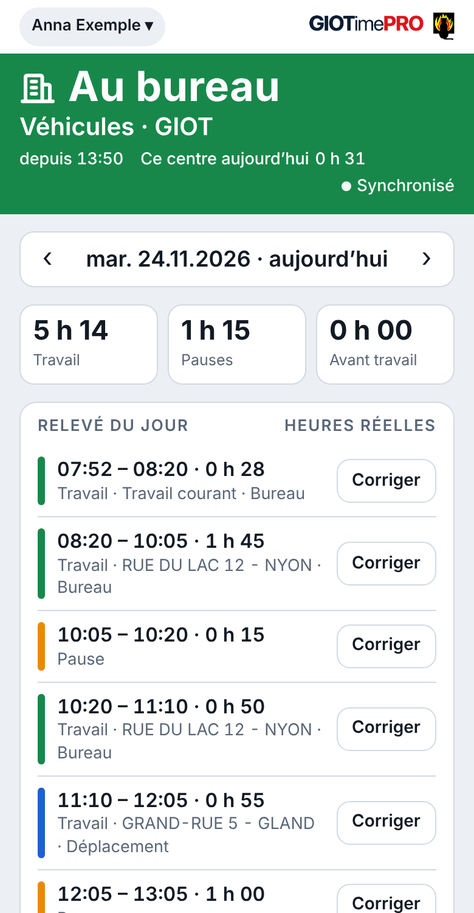
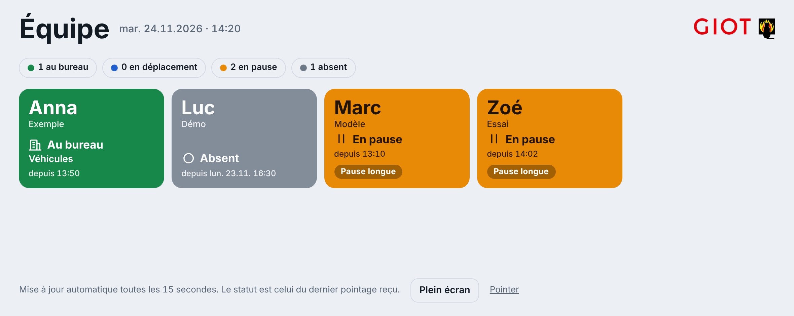
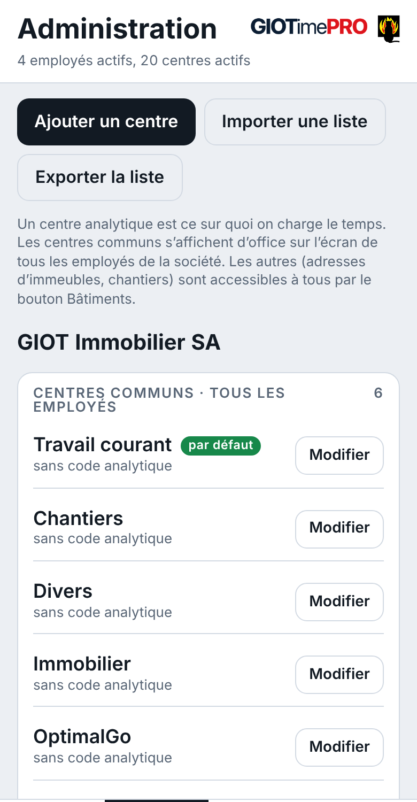
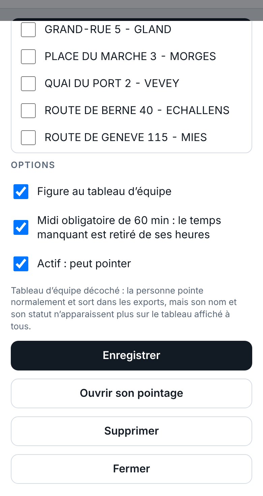
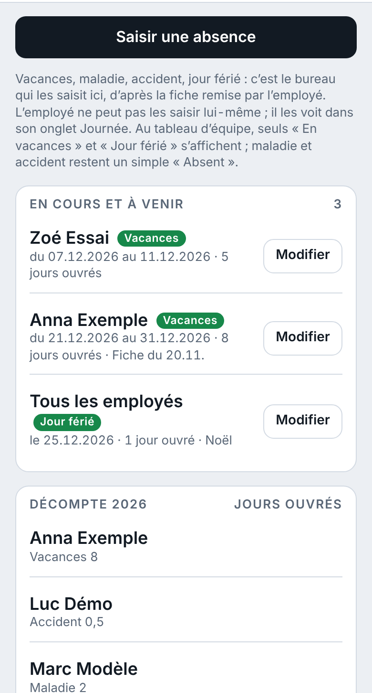
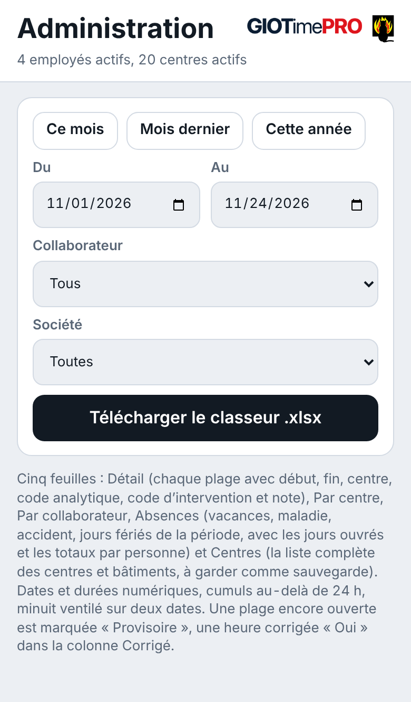

GIOTimePRO
Mode d’emploi
Le pointage du temps de travail par centre analytique, sur le téléphone.
Version 10 du 25 novembre 2026 · GIOT Immobilier SA · Le résumé en une page s’appelle « GIOTimePRO pour les nuls ».
1. À quoi sert GIOTimePRO · 2. Se connecter · 3. L’écran de pointage · 4. Le déroulement d’une journée · 5. Les centres analytiques · 6. L’onglet Journée et les corrections · 7. Les pauses et le midi obligatoire · 8. Sans réseau · 9. Le tableau d’équipe · 10. L’administration · 11. Questions fréquentes
GIOTimePRO enregistre le temps de travail de chacun et le répartit sur des centres analytiques. Le but est double : connaître le temps de travail en général, et surtout charger le temps sur les chantiers et les immeubles pour lesquels il sera facturé.
Les centres suivent la clé de la comptabilité analytique du programme Astuces : un centre est l’adresse postale d’un immeuble. Quelques centres seulement sont généraux (Travail courant, Véhicules, Chantiers, Divers, Immobilier, OptimalGo). Les heures pointées sont ensuite reportées dans Astuces.
Tout se fait d’un geste, sur le téléphone. L’employé ne saisit jamais d’heure à la main, sauf pour corriger un oubli.

Tu restes ensuite connecté sur ce téléphone : pas besoin de retaper le PIN chaque jour. Pour te déconnecter, touche ton nom en haut à gauche, puis « Se déconnecter ».
Raccourci sur l’écran d’accueil (iPhone) : dans Safari, touche le bouton Partager, puis « Sur l’écran d’accueil ». GIOTimePRO s’ouvre alors comme une application, avec l’icône du chat.
Changer ton code PIN : touche ton nom en haut à gauche, puis « Changer mon code PIN ». Tape le code actuel, puis le nouveau deux fois (4 à 8 chiffres).
Six codes PIN faux de suite bloquent la connexion pendant 15 minutes. Si tu as oublié ton PIN, la direction t’en donne un nouveau.
Sur cette même page, trois liens ouvrent les documents : ce mode d’emploi, le résumé « GIOTimePRO pour les nuls » et « Règles du travail en Suisse », la liste des règles principales du droit du travail (pauses, nuit et dimanche, vacances, maladie, fin du contrat). Ils s’affichent dans une page de lecture : le bouton Retour au pointage reste visible en haut, et « Enregistrer ou imprimer le PDF » donne le fichier.

De haut en bas :
| Couleur du bandeau | Signification |
|---|---|
| Vert | Au bureau (ou à l’atelier), en travail |
| Bleu | En déplacement, en travail |
| Orange | En pause (pause, midi, appel privé, café avant travail) |
| Gris | Absent : journée pas commencée ou terminée |
Le bouton Bâtiments ouvre la liste complète des adresses, avec un champ de recherche : tape quelques lettres de la rue ou de la localité.
Favoris : touche l’étoile d’une tuile de bâtiment pour la garder en permanence sur ton écran.
En bas du bandeau, « Synchronisé » confirme que tout est transmis au serveur (voir chapitre 8).

En arrivant, touche Commencer la journée. Tu démarres sur le centre par défaut, « Travail courant ». Le premier travail du matin, relever et traiter en gros les e-mails reçus, se fait sur ce centre, sans attribution à un chantier.
Tu peux aussi commencer directement sur un autre centre en touchant sa tuile.
Dès que tu passes à un travail précis pour une adresse, touche Bâtiments, en bas à droite, puis l’adresse. Si sa tuile est déjà sur ton écran, touche-la directement. Le temps est chargé sur ce bâtiment à partir de cet instant, et le centre précédent s’arrête tout seul. Pour revenir au travail général, touche « Travail courant » ou un autre centre commun.

Quand tu quittes un bâtiment, pour un autre centre ou en fin de journée, le téléphone te demande deux ou trois mots sur ce qui a été fait et le code de l’intervention : Devis (compris dans le devis, proposé d’office), Régie (facturé en plus) ou Garantie (après la mise en service). L’heure est déjà enregistrée : la note ne retarde jamais le pointage. Une pause ne déclenche pas la note.
La note est obligatoire sur un bâtiment. Si tu fermes la page sans l’écrire, un rappel reste sur l’écran de pointage. Tu peux la relire ou la corriger dans l’onglet Journée, bouton Note, et en ajouter une sur un centre commun si elle est utile.
Touche En déplacement quand tu quittes le bureau pour le travail, et Au bureau à ton retour. Le centre ne change pas, seul le lieu change. Le tableau d’équipe montre ainsi qui est sur place.

Au retour, touche Reprendre : tu repars sur le même centre et le même lieu qu’avant la pause. Tu peux aussi reprendre sur un autre centre en touchant sa tuile.
Le midi dure au moins 60 minutes et se prend entre 11 h et 14 h 30. Pendant ton midi, l’écran indique l’heure à partir de laquelle tu peux reprendre sans rien perdre (chapitre 7).
Les pauses de la journée comptent comme du temps de travail, jusqu’à la durée fixée par la direction (30 minutes par jour : deux pauses de 15 minutes). Pointe-les quand même : c’est ce qui permet de les compter.
Si une pause dure longtemps, un rappel s’affiche. Il ne change jamais ton statut : c’est toujours toi qui reprends.
Tu es arrivé mais tu ne travailles pas encore : touche Café avant travail. Ce temps n’est compté ni comme travail ni comme pause. Touche ensuite « Commencer la journée ».
En partant, touche Fin de journée. C’est le seul geste qui arrête le compteur. En cas d’oubli, le programme le signale quand plus de 11 heures se sont écoulées sans aucun geste ; tu corriges alors l’heure réelle dans l’onglet Journée. Le programme ne change jamais une heure de lui-même.
Un centre est ce sur quoi on charge le temps. Il y en a de deux sortes.
| Centre | Ce qu’on y charge |
|---|---|
| Travail courant | Le centre par défaut. Tout ce qui ne peut pas être attribué à un chantier ou à une activité précise : e-mails du matin, rangement des outils, lecture, petit nettoyage de la cafétéria, tâches de moins de 15 minutes. |
| Véhicules | S’occuper des véhicules de l’entreprise. |
| Chantiers | Du temps passé sur un ensemble de chantiers, sans pouvoir l’attribuer à un seul. Ce temps est facturé. |
| Divers | Des tâches générales qui ne concernent aucun chantier en particulier. |
| Immobilier | La gestion de nos propres immeubles quand la tâche en touche plusieurs à la fois, ou pour des bricoles de moins de 15 minutes. |
| OptimalGo | Tout travail fait pour OptimalGo SA, quelle que soit la tâche. Ce temps lui est refacturé. |
Chaque immeuble ou chantier est un centre qui porte son adresse postale, comme dans Astuces. Tous les bâtiments sont accessibles à tout le monde par le bouton Bâtiments.
Pour éviter de chercher, l’écran de pointage affiche sous « Mes bâtiments » : le bâtiment en cours, ceux que la direction a épinglés pour toi, tes favoris (étoile) et tes trois adresses les plus habituelles, calculées sur tes 45 derniers jours. Cette sélection se met à jour toute seule au fil du temps.
S’il manque une adresse dans la liste, demande à la direction de la créer : elle apparaît toute seule.
Le détail du temps général n’est pas l’essentiel. Il sert à voir, pour chacun, la part du temps passée en général et la part réellement passée sur les chantiers. Ce qui compte, c’est de charger le chantier sur lequel on travaille.

L’onglet Journée montre ta journée telle qu’elle est enregistrée :
Les flèches en haut permettent de revenir sur les jours précédents. Les 45 derniers jours restent consultables et corrigeables.
Absences : vacances, maladie, accident et jours fériés ne se saisissent pas dans le téléphone. Tu remets ta fiche au bureau, qui les enregistre. Le jour concerné, l’onglet Journée affiche « Absence enregistrée par le bureau ». Une erreur ? Signale-la au bureau.
L’ancienne heure et ta raison restent dans l’historique et figurent dans l’export : une correction ne cache rien, elle rétablit l’heure vraie.
Les pauses ordinaires (Pause, Appel privé) comptent comme du temps de travail, jusqu’à 30 minutes par jour. Ce qui dépasse n’est pas compté, et le midi ne l’est jamais. L’onglet Journée l’indique sous « Travail retenu » : heures pointées, plus pauses comptées, moins midi non pris.
Le programme compare aussi ta journée aux pauses minimales prévues par la loi et signale ce qui manque dans l’onglet Journée, sans rien retirer.
| Travail dans la journée | Pause attendue |
|---|---|
| Plus de 5 h 30 | 15 minutes |
| Plus de 7 h | 30 minutes |
| Plus de 9 h | 60 minutes |
Plus de 5 h 30 de travail d’affilée sans aucune pause est aussi signalé.
Chaque geste est d’abord enregistré dans le téléphone, puis transmis au serveur. Sans réseau, tu pointes normalement : le bandeau indique « Hors ligne » et le nombre de pointages à transmettre. Ils partent tout seuls dès que le réseau revient, et l’indication redevient « Synchronisé ».
L’heure retenue est celle du téléphone. Si elle s’écarte de plus de deux minutes de celle du serveur, c’est l’heure du serveur qui fait foi.

La page www.le-top.ch/time/etat.html montre en un coup d’œil qui est au bureau, en déplacement, en pause ou absent, et sur quel centre. Elle est en lecture seule, se met à jour toutes les 15 secondes et passe en plein écran d’un bouton. Elle n’affiche ni la durée ni le motif des pauses. Quand une pause ou un midi dépasse la durée fixée par la direction, la tuile porte la mention « Pause longue ». Une personne en vacances est affichée « En vacances » avec la date de retour, un jour férié « Jour férié ». Une maladie ou un accident n’y figure jamais : la tuile indique seulement « Absent ». Une personne peut ne pas figurer du tout au tableau : la direction le règle dans sa fiche.
On y accède depuis la page de connexion (« Voir le tableau d’équipe ») ou depuis le menu de son nom.
Cette partie concerne la direction. Pour ouvrir l’administration, touchez le chat du logo, depuis n’importe quelle page. Elle est protégée par un mot de passe.
Mot de passe oublié : sur la page de connexion, touchez « Mot de passe oublié ». Un mot de passe provisoire, valable 30 minutes, est envoyé à l’adresse e-mail de la direction. Connectez-vous avec, puis choisissez le nouveau mot de passe. Tant que vous ne l’avez pas remplacé, l’ancien reste valable.

Un centre sur lequel des heures sont déjà chargées ne peut pas être supprimé : on l’archive.

Un employé qui a déjà des pointages ne peut pas être supprimé : on le désactive.

Les absences sont saisies par le bureau uniquement, d’après la fiche remise par l’employé. Touchez Saisir une absence, puis indiquez :
L’onglet liste les absences en cours et à venir, les absences passées, et le décompte de l’année : les jours ouvrés (lundi à vendredi) de chaque employé, par type. Un jour férié qui tombe pendant des vacances n’est pas compté comme jour de vacances. « Modifier » corrige ou supprime une absence.
L’employé voit ses absences dans son onglet Journée, sans pouvoir les modifier.

Choisissez la période (ce mois, le mois dernier, cette année ou des dates libres), éventuellement un collaborateur et une société, puis téléchargez le classeur. Il contient cinq feuilles :
Le classeur est mis en page pour l’impression en A4 (police Arial, dates jj.mm.aaaa, titres répétés sur chaque page). Les heures sont comptées à la minute entière, comme elles s’affichent : la colonne Durée est en h:mm, la colonne Minutes en nombre entier (1:25 et 85).
La colonne État indique « Terminée », « Provisoire » pour une plage encore en cours, ou « À vérifier » quand plus de 11 heures se suivent sans aucun pointage : la fin de journée a très probablement été oubliée, et l’heure est à corriger dans l’onglet Journée de l’employé. Une heure corrigée porte « Oui » dans la colonne Corrigé.
Touche tout de suite le bon. Un pointage remplacé par un autre dans les 20 secondes ne compte pas : il ne laisse aucune ligne, ni dans ta journée ni dans l’export. Si l’erreur a duré plus longtemps, corrige l’heure de début du bon centre dans l’onglet Journée.
Utilise le centre commun « Immobilier ». Pour plusieurs chantiers à la fois, « Chantiers ».
Pointe normalement. Tout est gardé dans le téléphone et transmis au retour du réseau.
Comme avant : avec la fiche remise au bureau. Le bureau enregistre l’absence dans GIOTimePRO ; rien à saisir dans le téléphone.
Ouvre la page sur le nouveau téléphone et connecte-toi avec ton nom et ton PIN. Tes pointages sont sur le serveur.
Demande à la direction de la créer. Elle apparaît toute seule dans la liste, sans te reconnecter.
Les 15 minutes qui manquent pour arriver à 60 sont retirées de tes heures du jour. Tes heures pointées ne sont pas modifiées ; la retenue apparaît dans l’onglet Journée.
Non. Les pauses de la journée comptent comme du temps de travail, jusqu’à 30 minutes par jour. Seul le midi n’est pas compté.
Non. En dessous de 15 minutes, tout reste en Travail courant.